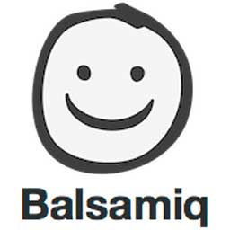

Mobile Application Design
Role: UX Researcher/Designer
Mobile Application Design
Role: UX Researcher/Designer

B2B Enterprise Desktop Portal Design
Role: UX Researcher/Designer; UI Designer
group
Empathize
I always start with research to gather context and background information.
User Interviews
Contextual Inquiries
Sales/Support Team Interviews
Competitive Analyses
mode_edit
Define
I search for the underlying issues that cause surface-level problems.
User Journey Maps
Personas
Focus Groups
forum
Ideate
I quickly sketch my ideas, and share with the rest of the team to get feedback.
Sketches
Card Sorting
User Flows
palette
Prototype
I create prototypes to test with users, get feedback, and iterate on my designs.
Mid/High-Fidelity Wireframes
Clickable Prototypes
Style Guide
repeat
Test
I validate my designs via testing with users and coworkers.
User Testing
Iteration
Low-Fidelity
I like using pen and paper for quickly sketching out my ideas - it's quick and easy to fix, and I love drawing.
Mid/High-Fidelity


I use Figma at work and Sketch at home to create mid/high-fidelity wireframes. For projects that don't have UI components defined, I create style guides using these tools.
Prototyping

I use paper prototyping to do a quick usability test. When I have mockups created, I use InVision or Adobe XD to conduct user testing.